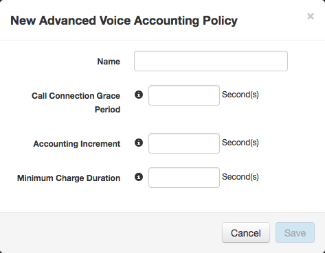
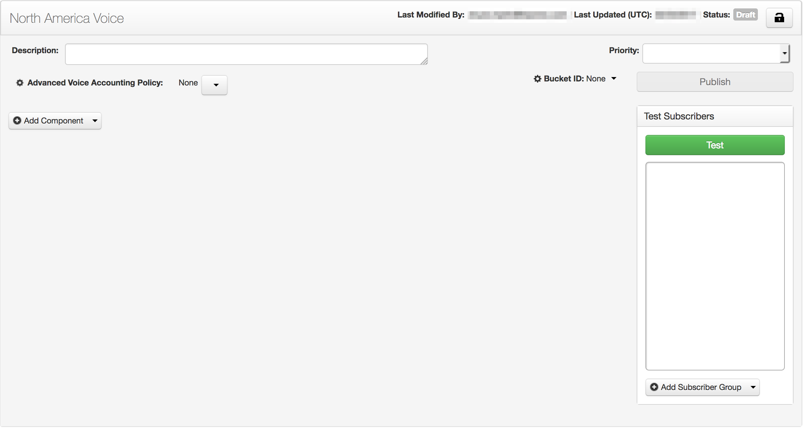
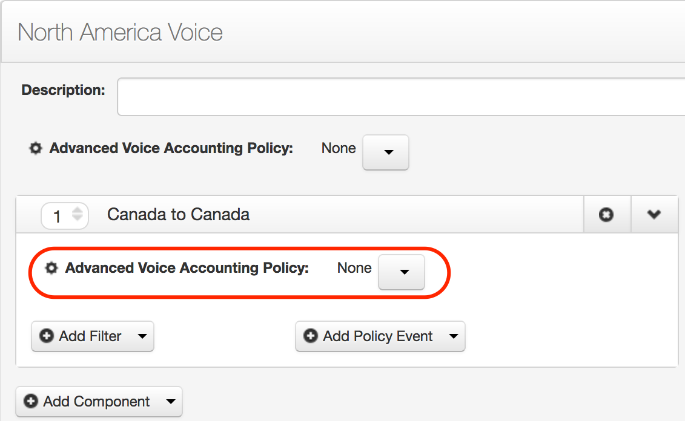

Voice accounting defines how voice calls are charged and are defined with voice accounting policies. Voice accounting allows you to get value from your cellular network, prevent gaming and other types of system fraud, and adhere to local laws. Voice accounting policies can also allow you to charge differently for calls to different places and for incoming vs. outgoing calls. This topic will walk you through the creation of several voice accounting policies that you can then add to a voice service policy and create a calling plan.
A voice accounting policy contains 3 settings that define how voice calls are charged: call connection grace period, accounting increment, and minimum charge duration. You can view details about each setting in Voice Accounting Policy Settings.
You want to create a North America calling plan. North America consists of 3 countries: Canada, U.S.A. and Mexico. There are 9 types of calls to be considered:
The plan that we will end up with can have just one eCommerce voice service policy attached to it. Yet that policy will have to accommodate all of these cases. We will have to identify the voice accounting needs of each case, and then determine how many voice accounting policies we need. (This may be less than 9. For example, if the voice accounting for U.S. calls to Mexico and U.S. calls to Canada are the same, one voice accounting policy can be used for both cases.)
Voice accounting policies can be attached to both the voice service policy and any components in a voice service policy. So a good way to approach this might be to have one component for each case. Voice filters in a component can define not only what numbers are allowed, but whether incoming, outgoing, or both types of calls are allowed. To make management easy, we'll use the outgoing calls only choice in our filters.
In each component, we will be adding filters and policy events. For the filters, we will add regular expressions. Creating the regular expressions that we want is out or scope for this exercise, so we will assume that they have already been created for us. We will assume that 3 regular expression exist:
For the policy events, we will add network groups. Network group creation is also out of scope for this exercise. Network groups are typically created and maintained by network engineers intimately familiar with your network. We will assume that 6 network groups exist:
Before we begin to create anything in Service Design Center, it's best to define all of the values we're going to need. Voice accounting policies have 3 settings:
See Voice Accounting Policy Settings for more details about the requirements for the settings, what they do, and why you might want to set them at specific values.
| Call Type | Call Connection Grace Period | Accounting Increment | Minimum Charge Duration |
|---|---|---|---|
| The amount of time (in seconds) that occurs between call initiation and when call charging begins. This number must be less than Minimum Charge Duration. | The time periods (in seconds) used for charging. This number must be less than or equal to the Minimum Charge Duration. | The minimum amount of time (in seconds) that a call is charged for. This number must be greater than Call Connection Grace Period and greater than or equal to the Accounting Increment. | |
| Canada to Canada | 0 | 10 | 30 |
| Canada to U.S. * | 5 | 10 | 30 |
| Canada to Mexico | 10 | 10 | 60 |
| U.S. to Canada * | 5 | 10 | 30 |
| U.S. to U.S. | 0 | 5 | 15 |
| U.S. to Mexico | 5 | 15 | 15 |
| Mexico to Canada | 10 | 15 | 30 |
| Mexico to U.S. | 5 | 15 | 30 |
| Mexico to Mexico | 0 | 15 | 30 |
* The asterisks identify 2 cases that have the same setting values. So we will need to create 8 voice accounting policies, not 9.
There are 3 basic steps:

We will use the values in the Call Type column for the names all of the accounting policies we create, except one, the one we will create that encompasses 2 of the above use cases. You want to use meaningful names so when you are creating voice polices and have to select the correct voice accounting policy, you can make sure you select the correct one.
You should now see your 8 new voice accounting policies in the table.
eCommerce policies are what allow plans to use the cellular network. So before you can create a plan, you have to create the eCommerce policy that your plan will be based upon. the basic steps are similar to policy creation in Create a Basic Plan.
There are two types of eCommerce policies: service polices and entitlement policies, and there are three types of each: voice, messaging, and data. For a voice plan that you want to put in the catalog for customers to buy, you want to create a voice service policy.
This takes you to the Add Voice Service Policy dialog box.
This is where your planning begins to pay off. When you create a plan, you attach a service policy to it. The name you use here is the name you will have to find when you create the plan. For this scenario, we'll call the policy "North America Voice."
A new eCommerce policy is like a blank canvas. Like when you create a new document in a word processing program, you start with nothing and you fill in the content. The content, in this case, is an eCommerce service policy.

Policies do all the work, and service policies do all the work to define what service can be used, when, and how. This is a voice service policy, so we know that it controls voice service. But how?
Policies contain components. Components contain policy events, and those are connected to filters. The filter-policy event combination in a policy component is what does most of the work in a policy.
Components also can have voice accounting policies attached to them. Rather than attach a voice accounting policy at the policy level, as we did in Create a Basic Plan, we will attach a voice accounting policy to each component we add to this voice service policy.
So we want to add the first component.
As with most things, we have to give the component a name. We're going to use a naming convention where the component name matches the voice accounting policy in the component. That way, if we have any issues or need to make any changes, it will be easy to find out where we have to do the work. We will be adding several components to the service policy. For this first component, we'll give it the name "Canada to Canada."
For all the components in this policy, we will be doing three things:
We will attach a voice accounting policy to this component first.

The rest of the component contains two parts. The filter defines what you can do and the policy event defines when and where you can do it.
The next thing we will do is add a filter to the component. Filters contain criteria, and the voice filter criteria in filters restrict when the policy event gets evaluated.
And like with most new things we add, the filter needs a name. We'll stay consistent with our naming: "Canada to Canada."
Unlike when we created a basic plan, this filter requires some criteria to be configured. We will add 2. First, we want to configure the filter to allow only outgoing calls.
Then, we want to configure the filter to allow those outgoing calls only to numbers in Canada.
Next, we add a policy event.
The default action for a policy event is Allow, so we don't need to change that. We just need to add 2 network groups.
We are going to assume that your network engineers have created the network groups as we described at the beginning of the topic.
Policy event criteria add further restrictions, but no additional restrictions are needed, so we won't add any of those.
That's it for one component. Now you're going to build 8 more. The following table describes how each of the components in this policy should be configured, including the one we just built:
| Component Name | Voice Accounting Policy | Filter Name | Regular Expression | Network Groups |
|---|---|---|---|---|
| Canada to Canada | Canada to Canada | Canada to Canada | Canada | Canada Home, Canada Roaming |
| Canada to U.S. | Canada to U.S. and U.S. to Canada | Canada to U.S. | U.S. | Canada Home, Canada Roaming |
| Canada to Mexico | Canada to Mexico | Canada to Mexico | Mexico | Canada Home, Canada Roaming |
| U.S to Canada | Canada to U.S. and U.S. to Canada | U.S to Canada | Canada | U.S. Home, U.S. Roaming |
| U.S. to U.S. | U.S. to U.S. | U.S. to U.S. | U.S. | U.S. Home, U.S. Roaming |
| U.S. to Mexico | U.S. to Mexico | U.S. to Mexico | Mexico | U.S. Home, U.S. Roaming |
| Mexico to Canada | Mexico to Canada | Mexico to Canada | Canada | Mexico Home, Mexico Roaming |
| Mexico to U.S. | Mexico to U.S. | Mexico to U.S. | U.S. | Mexico Home, Mexico Roaming |
| Mexico to Mexico | Mexico to Mexico | Mexico to Mexico | Mexico | Mexico Home, Mexico Roaming |
Repeat steps 4 through 18 for each row in the table.
Finally, we have to add network enforcement. Network enforcement allows policy enforcement for devices that do not have the embedded ItsOn client software, and for voice service polices is in the form of bucket IDs. The bucket ID that you add to a policy should be configured to match the configuration of all the policy components.
Now we're done creating the eCommerce policy that will be used to power the plan. However, it cannot be attached to a plan until it is tested and published.
For this plan, you will follow the exact same steps that are in the Create the Plan section of the Create a Basic Plan topic, with different values for two settings:
After you promote and deploy the plan, you will add it to a store category, again as you did in the Create a Basic Plan topic.